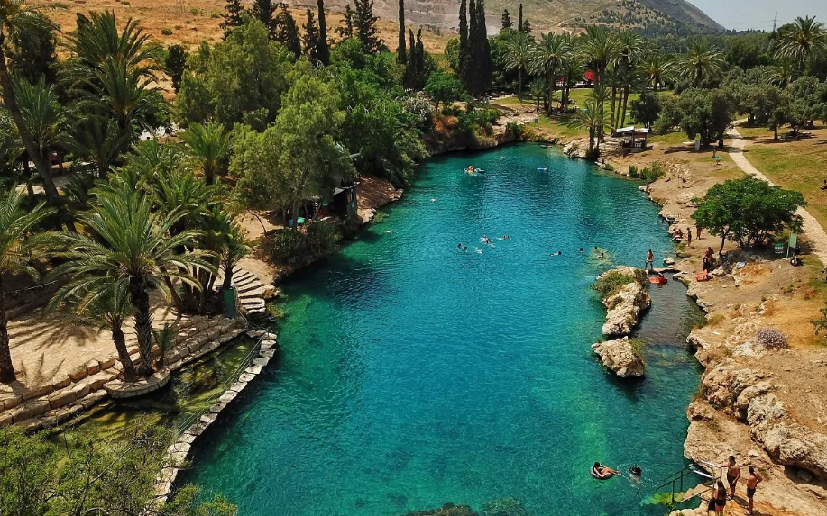

Hi! Welcome to my travel diary
My name is mor and I am software developer who likes to travel!
Trvaling excites me. I like to see and experience other cultures, as
well as meeting new people.
Travling in israel
During the Covid-19 and my I traveled in Emeck Hamaayanot.
This area is blessed with bountiful amounts of water, nature and
blossoming flora.

Travling abroad
- Peru
- Spain
- Guatemala
I flew to south America with a friend from home.
The first palce we landed in was Peru.
We were amazed from the Culture of the Peruvians, the wather and the
beautiful landscape and the alpacas
to read more about Peru!

After I was discharged from the army, I flew to Barcelona.
Madrid is full of history and good food.
to read more about Barcelona!
After South America, we flew to Central America and The first place
we visited was Guatemala.
There we did an amazing and difficult volcano trek. Guatemala was
one of a kind
to read more about Guatemala!

In the video, you can see the eruption of the Acatango volcano in Guatemala